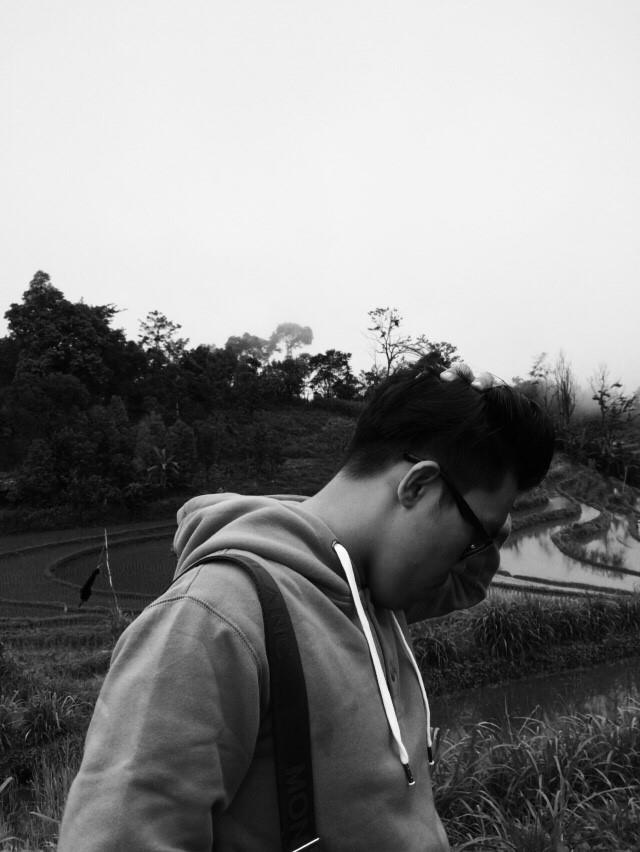
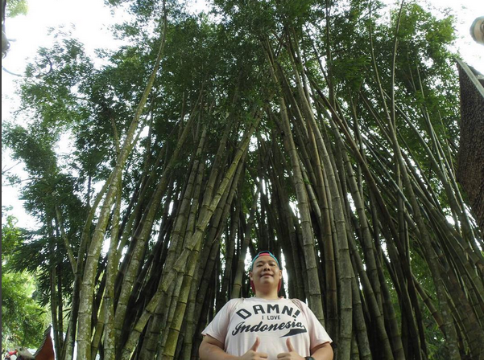
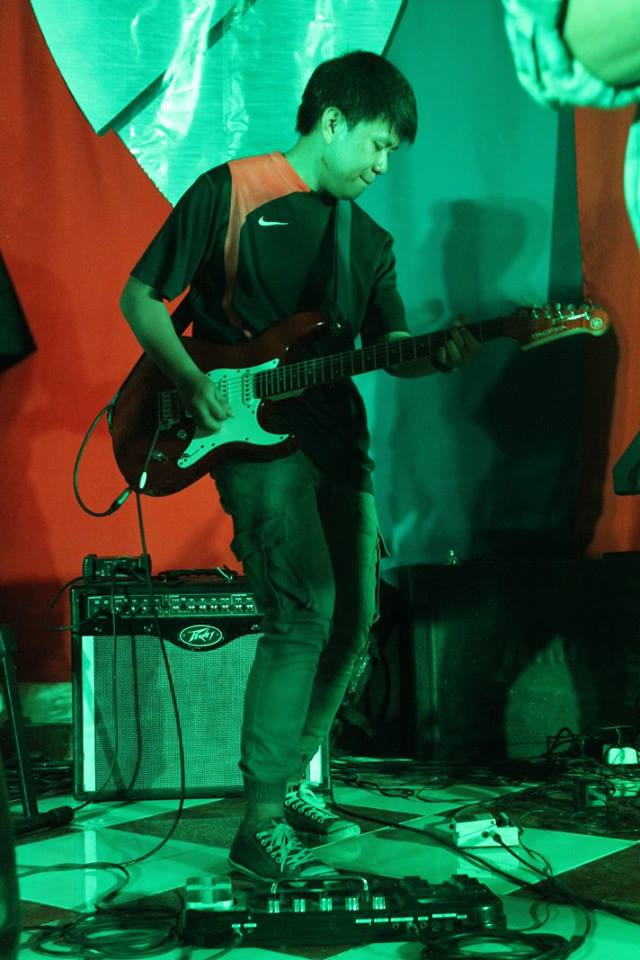

Visi
Membentuk anak-anak muda yang berkarakter,bermental kuat,berjiwa sportif dalam suasana kebersamaan dalam rangka meraih prestasi tinggi. menjadikan olahraga futsal sebagai pelayanan olahraga yang membawa dampak buat banyak orang.
Misi
- Adanya saling Mendukung di pelayanan Ukm Futsal Stmik Kharisma Makassar.
- Menjadikan komunitas Ukm Futsal Stmik Kharisma Makassar sebagai keluarga.
- Menjadikan arena Ukm Futsal Stmik Kharisma Makassar Berskala nasional.
- Menjalin persaudaraan yang kokoh diantara anggota klub Ukm futsal Stmik Kharisma Makassar.
- Menerapkan mode pelatihan futsal yang baik dan terarah.
- Memajukan Ukm Futsal Stmik Kharisma Makassar sebagai penyalur hobi yang baik

Ketua Ukm Futsal StMIK Kharisma Makassar
Biodata Diri Ketua Ukm Futsal STMIK Kharisma Makassar.
- Nama : Mirza Wirawan
- Tempat/ Tanggal Lahir : Ujung Pandang 14 - 12 - 1996.
- Alamat : Jl. Kenanga No 22 G (sungguminasa-Gowa).
- No.Telp : 089609010520.

Biodata Diri Bendahara Ukm Futsal STMIK Kharisma Makassar
- Nama : Giovanno Michael Fransisco
- Tempat/ Tanggal Lahir : Ujung Pandang 02 - 05 - 1996.
- Alamat : Jl. Baji Ateka No 11.
- No.Telp : 081354883332.

Sekertaris Ukm Futsal STMIK Kharisma Makassar
Biodata Diri Sekertaris Ukm Futsal STMIK Kharisma Makassar.
- Nama : Rezky Dermawan
- Tempat/ Tanggal Lahir : Ujung Pandang 12 - 06 - 1996.
- Alamat : Jl. Ruko Pasar Grosir Daya Modern (PAGODAM - Daya).
- No.Telp : 085827600771.